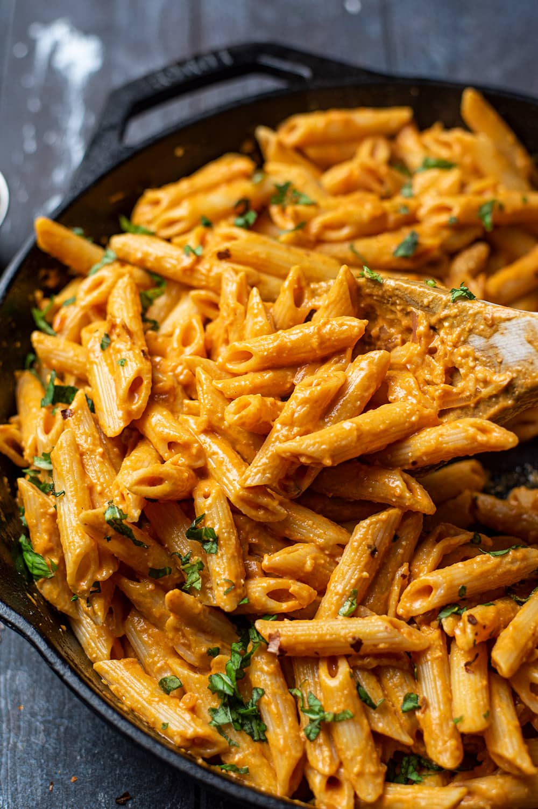

Instant Pot Penne Alla Vodka

What is Penne Alla Vodka?
Penne alla vodka is a pasta dish made with vodka and penne pasta, usually made with heavy cream, crushed tomatoes, onions, and sometimes sausage, pancetta or peas. The recipe became very popular in Italy and in the United States around the 1980s, when it was offered to discotheque customers. The recipe thus became an icon of the fashionable cuisine of the time, which preferred the use of cream in first courses. Even today, penne alla vodka is a typical dish of Italian-American cuisine.
Ingredients
- 2 tablespoons unsalted butter
- 1 tablespoon olive oil
- ¾ cup finely chopped yellow onion
- 3 cloves garlic, minced
- ½ teaspoon crushed red pepper
- ½ cup vodka
- 2½ cups water
- 1 (16 ounce) package uncooked penne pasta
- 2 teaspoons kosher salt
- 1 (28 ounce) can crushed tomatoes
- ½ cup heavy cream
- ⅓ cup grated Parmesan cheese
- ¼ teaspoon ground black pepper
Directions
- Turn on a multi-functional pressure cooker (such as Instant Pot®) and select Saute function. Select High temperature setting, and preheat the pot for 1 to 2 minutes. Add butter and oil. Add onion and cook, stirring constantly, until translucent, about 3 minutes. Add garlic and crushed red pepper, and cook, stirring often, for 1 minute.
- Pour in vodka and cook until reduced by half, about 3 minutes. Cancel Saute function. Stir in water, penne, and salt. Pour tomatoes over penne; do not stir. Close and lock the lid. Select high pressure according to manufacturer's instructions; set timer for 4 minutes. Allow 10 to 15 minutes for pressure to build.
- Release pressure carefully using the quick-release method according to manufacturer's instructions, about 5 minutes. Unlock and remove the lid. Stir in cream and Parmesan cheese; let stand for 3 minutes. Stir in pepper.
Return to top
Return to main page